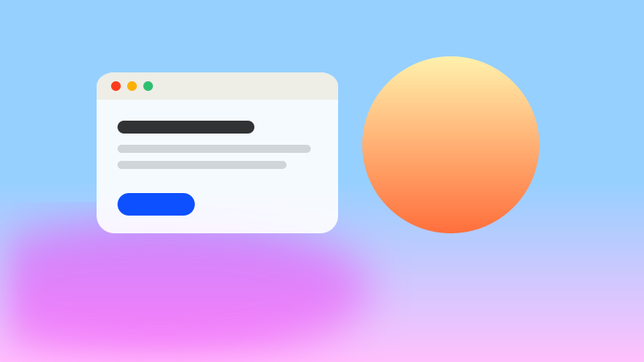

Default
Warm Gatsby-white paper, black ink, internet blue.
A classless stylesheet
Drop in one stylesheet, write plain HTML, and get soft gradients, warm paper, serif headlines and pill buttons. No classes required.
Add the stylesheet to the <head> of any page. Everything else is just the HTML you already know how to write.
<link rel="stylesheet" href="yearn.css">Or straight from a CDN, no download needed:
<link rel="stylesheet" href="https://cdn.jsdelivr.net/gh/immannino/yearn.css@0.1.0/dist/yearn.min.css">Want a different palette? Load a theme after it. A theme is just a handful of CSS variables, so you can write your own from themes/_template.css.
<link rel="stylesheet" href="yearn.css">
<link rel="stylesheet" href="themes/dusk.css">Fine-tune the mood with attributes on <html> — or try the panel in the corner. Press ⌘ K to imagine a command bar.
<html data-theme="dark" data-gradient="creamsicle" data-accent="pink">Every theme sets its own paper, ink, accent and hero gradient — in both light and dark mode. Pick one to restyle this whole page.
Warm Gatsby-white paper, black ink, internet blue.
Sage paper, forest ink and a fresh green accent.
Lavender paper, plum ink, a lilac-to-peach sky.
Toasted cream, espresso ink, signal red.
Cool slate, navy ink, teal and seafoam.
Newsprint greys and a serif body. Quiet and editorial.
Pink paper, magenta accent, a loud diagonal hero and rounder corners.
After the Arc Resource Center: heavy blue headlines, red buttons, grainy color blocks.
Navy, green and sky blue with Work Sans headings. Yellow buttons in dark mode.
Put two or more <article>s in a <section> and they become a responsive card grid.

Your <header> becomes a rounded, grainy gradient panel set inside the page — like a webview inside its window.
Newsreader for display, Inter for reading, DM Mono for the little uppercase labels that hold it all together.
Cotton candy, creamsicle, grapefruit, sunshine, midnight and plain. Add data-gradient to any element.
Warm charcoal instead of pure black. Force either theme with data-theme.
Soft focus rings, custom checkboxes, switches, a pill search bar and a rainbow progress bar.
Keyboard focus gets a dotted ring. Reduced-motion users get no animation at all.
The reading column sits at a comfortable 44rem. Body copy is set in Inter at 17px with generous leading, while emphasis, inline links, highlighted passages, CSS abbreviations, inline code, deleted and inserted text, H2O and E = mc2 all have a considered look.
We want the internet to feel less like a place you go to get things done, and more like a place you live.
<section>
<h2>Pricing</h2>
<article><h3>Free</h3><p>For tinkering.</p></article>
<article><h3>Pro</h3><p>For shipping.</p></article>
</section>| File | What it is | Size |
|---|---|---|
yearn.css | Readable source, loads Google Fonts | 42 KB |
dist/yearn.min.css | Minified, loads Google Fonts | 7.0 KB gz |
dist/yearn.core.min.css | Minified, bring your own fonts | 6.9 KB gz |
themes/*.css | One palette each, light + dark | 0.2–1.1 KB gz |
Really. Everything is keyed off semantic elements, with a few optional attributes like role="button" and data-gradient.
Every value is a CSS custom property prefixed with --y-. Override them in your own stylesheet after yearn.css.
Yes. The only script on this page powers the demo panel and the dialog button below.